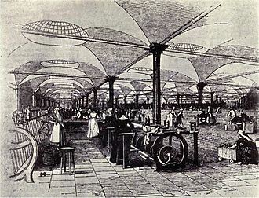

ما هي الثورة الصناعية؟ الثورة الصناعية هي انتشار وإحلال المكننة محل العمل اليدوي. شهدت أوروبا الغربية خلال القرن الثامن عشر نهضة علمية شاملة فتنوعت الأبحاث والتجارب لتشمل مختلف فروع العلم ولتؤدي إلى اختراعات واكتشافات مهمة كانت السبب المباشر في قيام الثورة الصناعية خلال القرن التاسع عشر من عمليات التصنيع الكيميائي الجديدة وإنتاج الحديد، استخدام الطاقة البخارية والمائية وتطوير أدوات الآلات وظهور نظام المصنع الميكانيكي. أدت الثورة الصناعية أيضًا إلى ارتفاع غير مسبوق في معدل النمو السكاني، وكذلك كان لها الأثر البالغ على الحياة الاقتصادية والاجتماعية والسياسية سواء في أوروبا أو خارجها.
بدأت الثورة الصناعية في بريطانيا العظمى، فكانت العديد من الابتكارات التقنية من أصل بريطاني. حتى أضحت في منتصف القرن الثامن عشر الدولة التجارية الرائدة في العالم، وسيطرت على إمبراطورية تجارية عالمية مع مستعمرات في أمريكا الشمالية ومنطقة البحر الكاريبي، وهيمنة عسكرية وسياسية كبيرة على شبه القارة الهندية، لا سيما مع بنغال المغولية منطقة التصنيع الأولي، من خلال أنشطة شركة الهند الشرقية. فتطور التجارة وظهور المشاريع هي من الأسباب الرئيسية للثورة الصناعية.
محطات التوليد البخارية (بالإنجليزية: Steam power plants) وهي تنتشر اعتماداً على القرب من شواطئ البحار أو مجاري الأنهار وكذلك على القرب من مصادر الوقود ومراكز استهلاك الطاقة الكهربائية. وتستعمل هذه المحطات الأنواع المتوفرة من الوقود مثل (الفحم الحجري ـ الغاز الطبيعي ـ البترول). ويتم أولاً في تلك المحطات تحويل طاقة الوقود الكيميائية إلى طاقة حرارية في اللهب الناتج من الاحتراق والتي تعمل على رفع درجة حرارة وضغط المياه الموجودة في المراجل لتتحول إلى بخار والذي يتم تحميصه ثم يعمل هذا البخار على إدارة محور التوربينات ويربط محور المولد الكهربائي ربطا مباشراً مع محور التوربينات البخارية فيدور المولد بنفس السرعة ليقطع المجال المغناطيسي الناشئ على العضو الدوار من المولد فيظهر على طرفي الجزء الثابت من المولد فرق جهد وبذلك تتحول الطاقة الميكانيكية الموجودة على المحور المولد إلى طاقة كهربائية على أطراف التوصيل للمولد.
